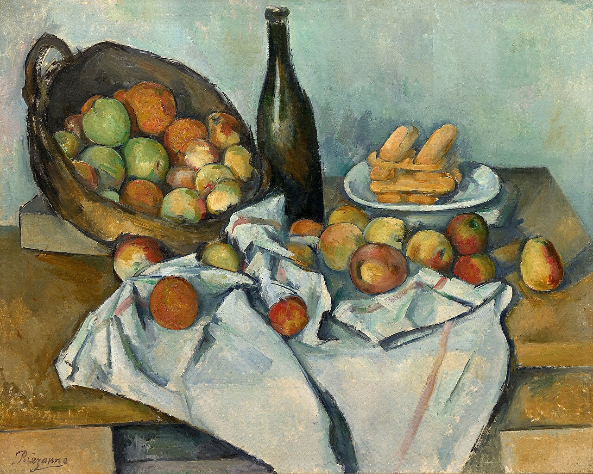

The brief
How can a painting communicate what one place means to me?
Create one substantial, resolved painting about a place you know. Bring together direct observation, personally meaningful details and an intentional painting approach. Choose a scale and level of complexity that give your idea room to develop; an enlarged classroom exercise alone is not a significant outcome.
Materials & preparation
Drawing book, your own photographs, graphite, acrylic or watercolour, suitable prepared paper or board, brushes and a mixing palette. Negotiate the support and scale before production.
Use your own drawings and photographs as starting points. Record sources and seek permission for people, places and culturally significant material. Discuss tikanga and context with your teacher where relevant.
Artist connections
Choose the connections that serve your intention. The contemporary models offer different approaches; select a relevant comparison rather than studying every artist. These works are references, not assessment exemplars.
Compare how a remembered place, a garden or a portrait can communicate a personal relationship. Choose the model that best supports the subject of your significant painting.
Star Gossage
Contemporary Māori · Aotearoa New Zealand
Gossage’s figures, colour and material choices connect with whānau, whakapapa and her ancestral home at Pākiri. Investigate how a painting can communicate remembered presence rather than a purely literal likeness.
The Arts Foundation Te Tumu Toi · artist profile · Painting investigation
Karl Maughan
Contemporary · Aotearoa New Zealand
Maughan returns to gardens through saturated colour and carefully organised planting forms. Compare how repeated attention to one subject can produce different spatial relationships rather than a single repeated solution.
Gow Langsford · artist profile and garden paintings · Painting investigation
Amy Sherald
Contemporary · United States
Sherald’s portraits use greyscale skin alongside strong colour relationships to question representation and racial identity. Read that context before investigating the relationship between a figure, clothing and a flat background.
National Museum of Women in the Arts · artist and painting · Painting investigation
Paul Cézanne
France
Study the tilted table, overlapping forms and repeated touches of colour in The Basket of Apples. Investigate how a stable object can sit inside an unsettled picture space.
Artist resource
Historical comparison


Artwork reproduction rights and assessment permission are different. A reusable image on this site is not automatically suitable for your assessed portfolio. Read the external conditions.
Studio sequence
Use this as a flexible route through the learning. Let the work suggest the next move.
Find the story
Visit or closely observe a familiar place. Draw there, photograph your own viewpoints and collect written observations. Identify a detail that matters to you and explain the story you want the painting to carry.
Learn the painting language
Compare two relevant artworks. Identify specific conventions such as spatial structure, deliberate edges, underpainting or a restricted palette. Test those methods using your own subject; acknowledge the artists and keep the trials.
Plan a substantial outcome
Make several small composition studies. Test the hardest technical passage at the intended working scale. Select a proposal and agree with your teacher how scale, depth, production time and finish will make this a substantial single work.
Build and review
Prepare your support and work through the painting in planned stages. Keep progress photographs. At a midpoint conference, identify what the actual painting communicates and decide what needs adjusting. Your decisions should guide the next session.
Resolve and present
Unify the composition, resolve distracting or unfinished areas and review technical finish. Present the single artwork with its title and a short account of the conventions used. Keep supporting studies available to establish process and authenticity.
A useful studio conversation
Put two related works side by side. Describe what changed, show the evidence and explain what you will investigate next. Invite feedback, then make your own decision.
Evidence checklist
Use this to review your work. Completing the list does not guarantee a grade.
0 of 3 evidence checks complete
Presentation & submission
Your teacher will confirm the assessment window, support available, final evidence and local authenticity procedures. This sheet is an original teaching resource; it is not an NZQA-issued assessment. Compare NZQA’s annotated exemplars.
What changes between grades?
Student-friendly guidance adapted from the standard. The whole body of relevant evidence determines the grade; the examples below illustrate possibilities.
| Grade | What the evidence needs to show |
|---|---|
| Achievement | Use suitable painting methods and recognise the conventions informing your substantial, resolved work.In this task: The final painting communicates a place-based idea through the chosen composition and media. |
| Merit | Maintain consistent command of the media and techniques throughout the work.In this task: Edges, layers, colour mixtures and paint handling remain controlled across difficult as well as easy passages. |
| Excellence | Handle the selected media and techniques skilfully and fluently.In this task: Your technical choices work together confidently to communicate the idea in the resolved artwork. |
Authority: NZQA AS91913 achievement criteria and explanatory notes (PDF).
Watch for
A small preliminary study or an unresolved painting cannot replace the substantial final outcome.
Pause & reflect
Which passage best communicates the meaning of your place? Point to the painting, name the technical choice and explain how it contributes.
These optional working notes belong to you. This website does not submit assessment evidence.
Notes and checkboxes can be saved in this browser. On a shared device, clear them before leaving.
Teacher notes
Planning, assessment & differentiation
Agree the substantial scope before students start. Assess the resolved artwork holistically; preliminary studies support the production process rather than replace the single outcome. Use the current 91913 exemplars and moderator commentary to calibrate judgements. The suggested timing allows sustained production, rather than treating this as a short drawing study.
Open the printable 50-minute lesson plans for 1.2
Support and stretch
For teaching practice, reduce the number of simultaneous choices, model one material process and invite oral discussion alongside drawing. Offer vocabulary prompts and accessible media. To extend the learning, ask students to compare alternatives, justify a rejection or investigate a consequence of their own decision. Adapt assessed support to the standard’s conditions and any approved arrangements.
Before issuing the task
Set local start and finish dates, agree available materials and check the current standard, conditions and exemplars. Use school authenticity processes and your normal moderation procedures. Adjust this brief to the class and context; it has not been quality assured by NZQA.
Assessment window:
Teacher / class:
Checkpoint dates:
NZQA sources for this sheet
- AS91913 · official achievement standard (PDF)
- NZQA exemplars and assessment resources
- Visual Arts National Moderator’s Report
Checked 22 November 2026. This original task sheet interprets NZQA requirements for a painting classroom; official NZQA documents govern assessment.